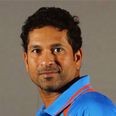
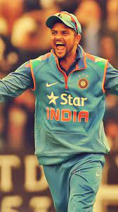
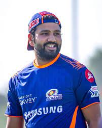

-

Column 1
Although India was defeated in the semifinals of the 1996 World Cup, Tendulkar emerged as the tournament’s top run scorer, with 523 runs. In 1998 he was chosen for the Rajiv Gandhi Khel Ratna Award, the highest award given to an Indian athlete, for his outstanding performance in the 1997–98 season. India was defeated by Australia in the 1999 World Cup, failing to advance past the round of six, and was soundly defeated by both Australia and South Africa in series later that year. In the 2003 World Cup, however, Tendulkar helped his team advance as far as the finals. Though India was again defeated by Australia, Tendulkar, who averaged 60.2, was named the man of the n 2012, Tendulkar was nominated to thTendulkar took up cricket at the age of eleven, made his Test limited
-

Column 2
Mahendra Singh Dhoni (born 7 July 1981) is an Indian professional cricketer who was captain of the Indian national cricket team in limited-overs formats from 2007 to 2017 and in Test cricket from 2008 to 2014. He is a right-handed wicket-keeper batsman.[3] He led the team to three ICC trophies including the 2007 ICC World Twenty20, 2011 ICC Cricket World Cup and 2013 ICC Champions Trophy. Under his Captaincy India won Asia Cup for two times, 2010 and 2016. India also won ICC Test Championship Mace for two times 2010 and 2011 under his leadership. He is considered as one of the greatest Captain and Wicket Keeper–Batsman of all timeHe led the team to three ahendra Singh Dhoni
-

Column 3
Suresh Raina[5] (audio speaker iconpronunciation (help·info); born 27 November 1986[6]) is a former Indian international cricketer.[7] He occasionally served as stand-in captain for Indian men's national cricket team during the absence of the main captain. He played for Uttarpradesh (UP) in domestic cricket circuit.[7] He is an aggressive left-handed middle-order batsman and an occasional off-spin bowler. He is the second-youngest player ever to captain India.[original research?] He was the captain of Gujarat Lions in the
-

Column 4
Rohit Gurunath Sharma (born 30 April 1987) is an Indian international cricketer who is the current captain of the Indian national team. A right-handed opening batsman and an occasional right-arm off break bowler, he is widely acknowledged as one of the most outstanding batsmen in limited overs cricket. He plays for Mumbai in domestic cricket. He captains Mumbai Indians in the Indian Premier League and they have won the tournament a record five times under his leadership.Rohit Gurunath Sharma (born 30 April 1987) Outside cricket, Sharma is an active supporter of animal welfare campaigns. He is the official Rhino Ambassador for WWF-India and is a member of